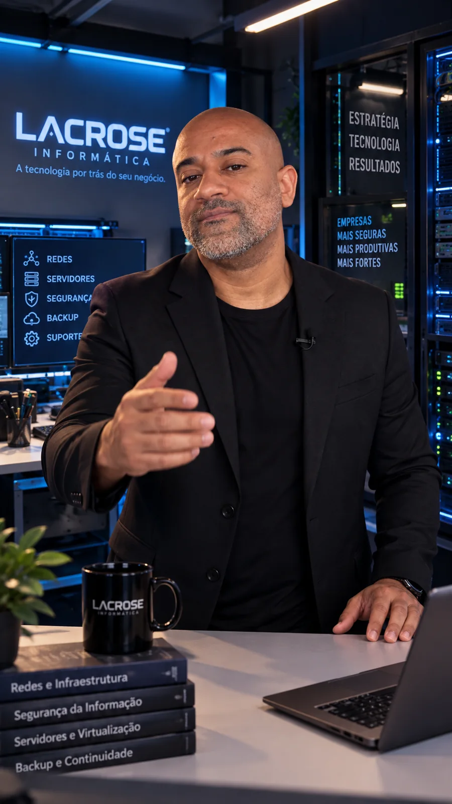
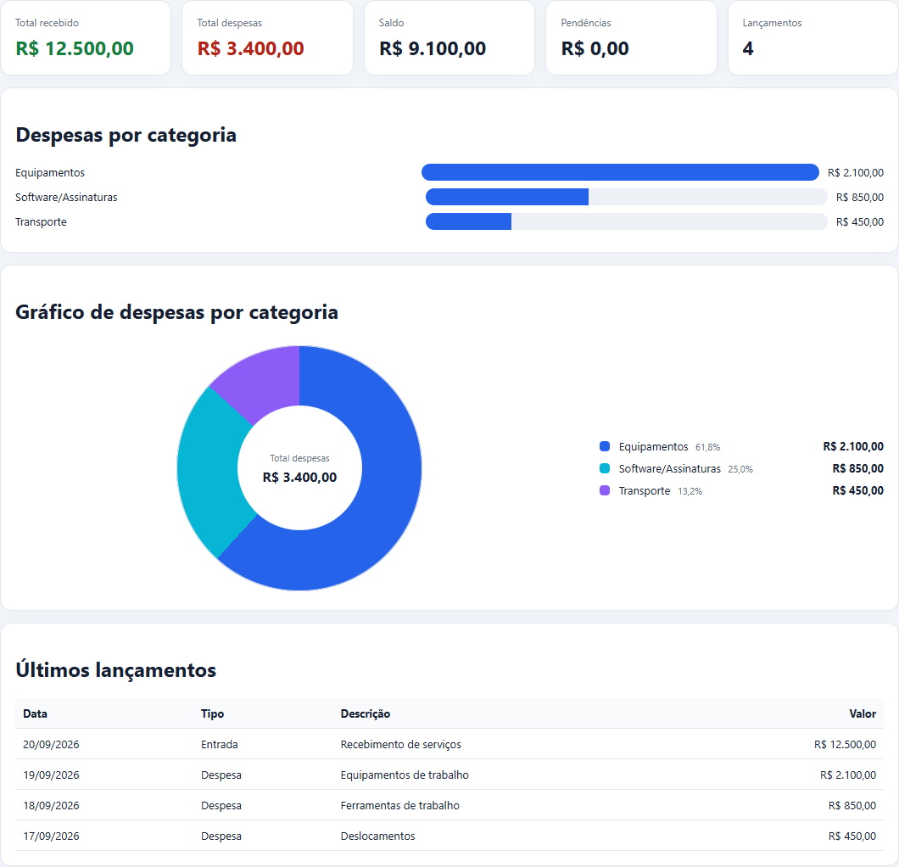

Infraestrutura
& Redes
Uma base organizada para sua equipe trabalhar com estabilidade, compartilhar recursos e crescer com planejamento.
MikroTik · Wi-Fi corporativo · VLAN · Servidores
Planejar minha infraestrutura ↗LACROSE INFORMÁTICA · POR IGOR LACROSE
Da rede que mantém sua empresa conectada ao sistema que transforma sua rotina. Infraestrutura, segurança, desenvolvimento e IA com quem entende o conjunto.

Tecnologia, visão de negócio e proximidade.
01 / SOLUÇÕES EMPRESARIAIS
O ponto de partida é o desafio da sua empresa. A tecnologia vem para resolvê-lo.
Uma base organizada para sua equipe trabalhar com estabilidade, compartilhar recursos e crescer com planejamento.
Controle quem acessa sua rede, separe ambientes e conecte equipes com mais segurança, dentro e fora da empresa.
Clareza para decidir o que corrigir, em que investir e como evoluir sua tecnologia de acordo com as prioridades do negócio.
02 / CONSTRUIR O PRÓXIMO PASSO
Quando uma ferramenta pronta não acompanha sua rotina, uma solução sob medida pode fazer a diferença.
Sites profissionais, sistemas web, softwares para Windows e aplicativos mobile. Soluções desenhadas para apresentar sua empresa, organizar informações e facilitar processos.
Vamos construir sua ideia ↗Integração de ferramentas, automação de processos e atendimento inteligente. Primeiro entendemos o fluxo; depois definimos onde a IA pode ajudar, com revisão humana e atenção aos dados.
Identificar oportunidades de automação ↗03 / DA IDEIA À FERRAMENTA
Um projeto próprio para explorar, navegar e conhecer o trabalho.
Mais clareza sobre
o seu dinheiro.
Receitas, despesas, relatórios e gráficos por categoria em uma ferramenta de controle financeiro.

04 / QUEM ESTÁ POR TRÁS DA LACROSE
Sou Igor Lacrose.
A Lacrose Informática é a minha marca profissional.
Minha trajetória em tecnologia começou em 1999. Reúno experiência em redes e infraestrutura, liderança técnica e certificação MTCNA, conectando essa base ao desenvolvimento de soluções e à inteligência artificial.
Meu trabalho começa por entender como sua empresa funciona. A partir daí, planejo e construo soluções que conectam a operação, protegem os acessos e simplificam a rotina.
Você conversa diretamente comigo: da primeira necessidade à definição do projeto.
Fale comigo sobre sua empresa ↗05 / PROXIMIDADE EM CADA ETAPA
Conhecer sua operação, ouvir os desafios e identificar o que precisa mudar.
Definir escopo, prioridades e próximos passos com clareza antes de começar.
Colocar a solução em prática e orientar o uso no dia a dia da empresa.
Suporte empresarial, assistência técnica, manutenção, backup e recuperação, monitoramento preventivo e contratos mensais conforme a necessidade.
Preciso de suporte ↗VAMOS CONVERSAR / ATENDIMENTO DIRETO
Conte o que sua empresa precisa melhorar.
Vamos definir juntos por onde começar.
Jequié e região · Bahia